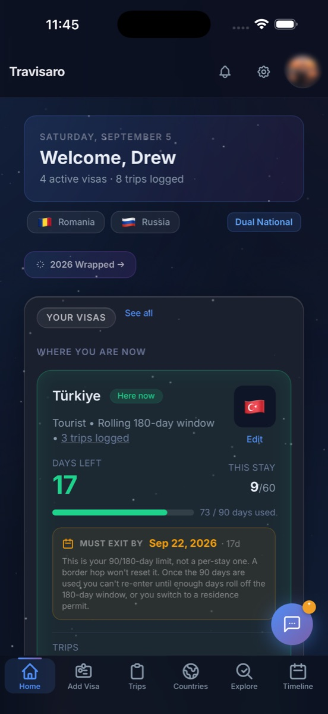
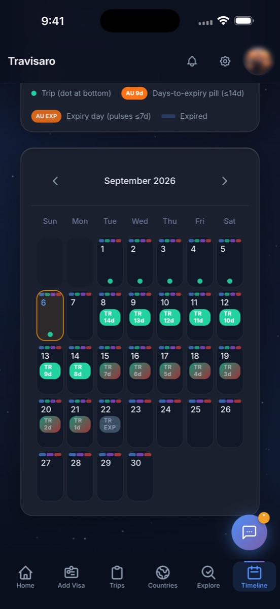
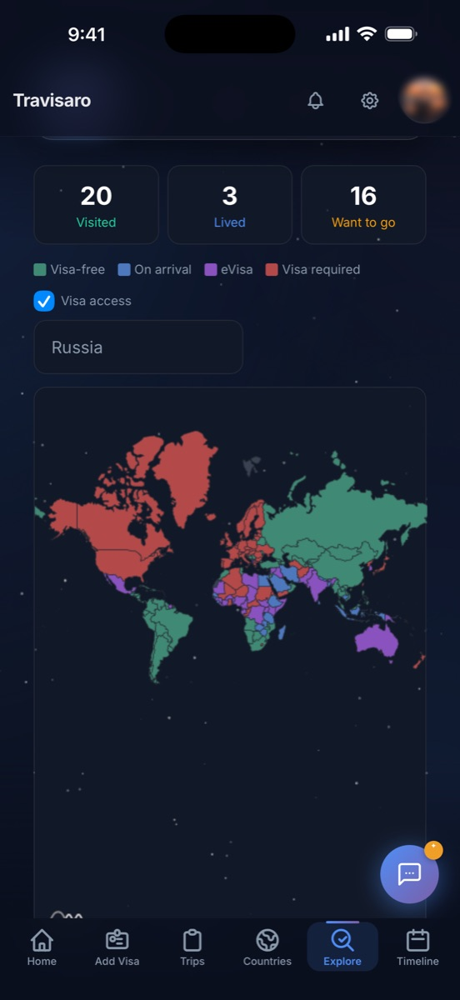

Since the EU switched on biometric border checks, every day you have spent in Schengen is counted in a database. Travisaro keeps that same count on your side, across every passport, every visa and every border you cross.
Travisaro users are tracking visas from
The re-entry ban a single overstay can carry. Your flat, your desk, your people, all on the far side of a border you can no longer cross.
How do digital nomads avoid visa overstays?

Your trips, colour-coded by risk level. Green, yellow, red, at a glance.

A warning while there is still time to change the plan, not the morning you have to leave.

Add a flight you are thinking about and see what it does to your days before you pay for it.
Log a trip once and Travisaro keeps the count every day, for every passport you hold. It warns you before a deadline and shows what a flight will do to your days before you pay for it.
See which days you have used, how many are left, and the date your window starts freeing up.
Take a photo of a visa or an entry stamp. Travisaro reads the country, the entry date and the length of stay for you.
Put in the dates you are thinking about before you book, and see straight away whether the trip is safe or risky under your visa rules.
Your trips, colour-coded by risk level. Green, yellow, red, at a glance.
Hold two passports? Each one gets its own history and its own count, so you know which one to travel on.
Not every country uses 183 days. Switzerland triggers at 90 days. Thailand at 180. The UK counts from 6 April, not January. Travisaro uses the legally correct threshold and tax year for each country, sourced from official tax authority data, covering 45 countries.
45 countries. Sources: official tax authority data. Not legal advice. Always consult a qualified tax professional for your specific situation.
Tag countries and cities you've visited, lived in, or want to go. Drop photo memories on city pins. Get your own @username profile link, share it so friends can follow you and compare maps. Compare all 199 passports by global mobility rank.
@username profiles • Follow friends • City-level pins • Passport rankings, free to start.
Snap a photo of any boarding pass or e-ticket. Travisaro reads the destination and dates, adds the trip, and updates your visa days and tax count with it.
Once a year you get a Spotify-style recap of your countries, days abroad and longest trip, made to share. You can also pin photos to the cities you have been to.
What travellers are saying
Add your visa once. Travisaro handles all calculations automatically from that point on. No spreadsheets, no mental math. Setup takes under 2 minutes.
Enter visa details manually or use Smart Scan to extract everything from a photo in seconds.
Add entry and exit dates. Travisaro automatically calculates your days used across all visas.
Check your dashboard before any border crossing. Know exactly where you stand, always.
Travisaro is free to start. Go Traveler ($11.99/mo or $99/yr) for unlimited visas, multiple passports, reminders and flight tracking, or Pro ($19.99/mo or $179/yr) to add the tax-residency tracker. Founder's Lifetime Deal: $149 once, Pro forever. First 100 only.
Everything you need to get started.
For nomads, expats & power travelers.
Founder's Lifetime Deal
Limited to first 100 users, never expires
$149 one-time
Full Pro access forever. Pay once, never again.
A spreadsheet does exactly what you tell it, which is the problem. It does not know the window moved overnight, and it will not stop you booking the flight.
| Feature | Spreadsheet | Calendar reminders | Travisaro |
|---|---|---|---|
| Schengen 90/180 auto-calculation | |||
| Alerts before expiry (30d, 14d, 7d) | Manual | Automatic | |
| AI scan from visa photo | |||
| Trip validation before booking | |||
| Multiple passports | Complex | Traveler+ | |
| Setup time | 1–2 hours | 30 min | Under 2 min |
You get 90 days inside the Schengen Area in any 180 day stretch. The word doing the damage is rolling: the 180 days are not a fixed half year, they slide forward with today's date. A week you spent in Lisbon in March can move back inside the window in September and change what you are allowed. Counting once is never enough, and that is the part that catches people.
Depending on the member state it can mean a fine, deportation, a re-entry ban of up to two years, and a flag against your name in the Entry/Exit System. Since EES went live, detection is not a judgement call at the desk, it is arithmetic the system has already done. One overstay can close all 27 Schengen countries at once.
Add each trip's entry and exit dates once. After that Travisaro recalculates the rolling window every day, so the number on your screen is today's number rather than the one you worked out last month. Before you book, put the dates in and it tells you whether the trip is legal while the ticket is still refundable.
Yes. Travisaro holds every visa expiry in one place and warns you 30, 14 and 7 days out, so the deadline reaches you before it reaches a border guard. Smart Scan reads a stamp or sticker straight from a photo, so adding a visa is a camera shot rather than a form.
Yes, on Traveler and Pro. If you hold two passports the days do not pool. Each passport gets its own history and its own remaining count, so you can see which one to travel on rather than guessing.
Yes, and not against a flat 183 days, because that number is not universal. Switzerland can trigger at 90 days, Thailand at 180, and the UK counts its year from 6 April rather than 1 January. Travisaro uses the real threshold and the real tax year for each of 45 countries, sourced from the tax authorities, and colours each one as you get closer. It is a day count, not tax advice. Take it to someone qualified before you act on it.
Free to start: 1 visa and 1 Smart Scan. Traveler is $11.99/month or $99/year for unlimited visas and scans, multiple passports, expiry reminders and passport comparison. Pro is $19.99/month or $179/year and adds the tax residency counter, tax calendar and history export. There is also a Founder's Lifetime Deal, $149 once for full Pro forever, limited to the first 100 people.
Real feedback from people tracking their visas with Travisaro.
Takes 60 seconds. Helps other nomads find us.
Reviews are displayed publicly. We don't edit them.
It'll appear here shortly once approved.
Visa rule changes, border tips, and nomad news, straight to your inbox. No fluff.
No spam. Unsubscribe anytime.